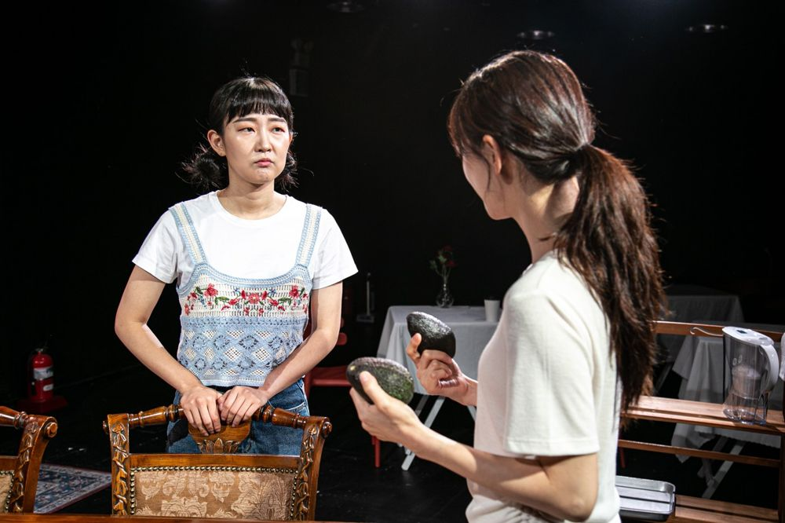

Green Pig > Archive > The Who & The What

For years Zarina has been writing a novel about Islam and women. Her father Afzal, who runs a large taxi company in Atlanta, secretly posts his elder daughter's photo on a Muslim dating site to find her a husband, and Eli, a white convert to Islam, comes to meet her. A year later Zarina finishes a novel about the origins of the hijab, and the family who read the manuscript reconsider the doctrines and values they had followed. A comedy borrowing the character structure of Shakespeare's The Taming of the Shrew.
2022.7.7–17 / Theater Lab Hyehwa-dong 1beonji
2023.3.16–31 The Who & The What / Jeongdong Theater Cecil - Changjak-ing Choice On
Original work: Ayad Akhtar
Translation & Dramaturg: Kim Hyeonji
Director: Park Hyunji
Assistant director: Jung Yujin
Set: Kim Hyerim
Lighting: Kim Sohyeon
Costumes: Shin Eunhye
Make-up: Nam Hyeyeon
Music: Park Goeun
Visual art director: Paika
Cast (2023): Cho Eunwon, Lee Seungmin, Jung Yeonjong, Park Subin
Previous: Blooming Station: Traces | Next: Home Sweet Home 2: Abandoned Children
Back to the archive | Any work
Published 2026.11.13